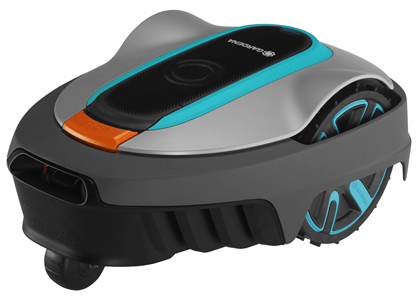

Gardena Sileno City 300
El Gardena Sileno City 300 és un tallagespa robòtic d'última generació, perfecte per a jardins petits i mitjans de fins a 300 m². Amb el seu avançat sistema de navegació i els seus sensors intel·ligents, aquest tallagespa ofereix un rendiment excepcional i una gespa impecable amb el mínim esforç per la teva banda.
El disseny compacte i silenciós del Gardena Sileno City 300 el converteix en una opció ideal per a usuaris que busquen un tallagespa fàcil d'instal·lar i mantenir. Gràcies al seu sistema de tall mulching, no hauràs de preocupar-te per recollir les restes de gespa, ja que aquests es converteixen en adob natural per al sòl.
No esperis més i adquireix el teu Gardena Sileno City 300 per gaudir d'un jardí perfecte sense esforç.
Compra ara